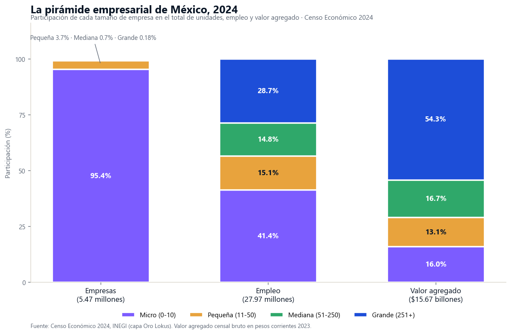
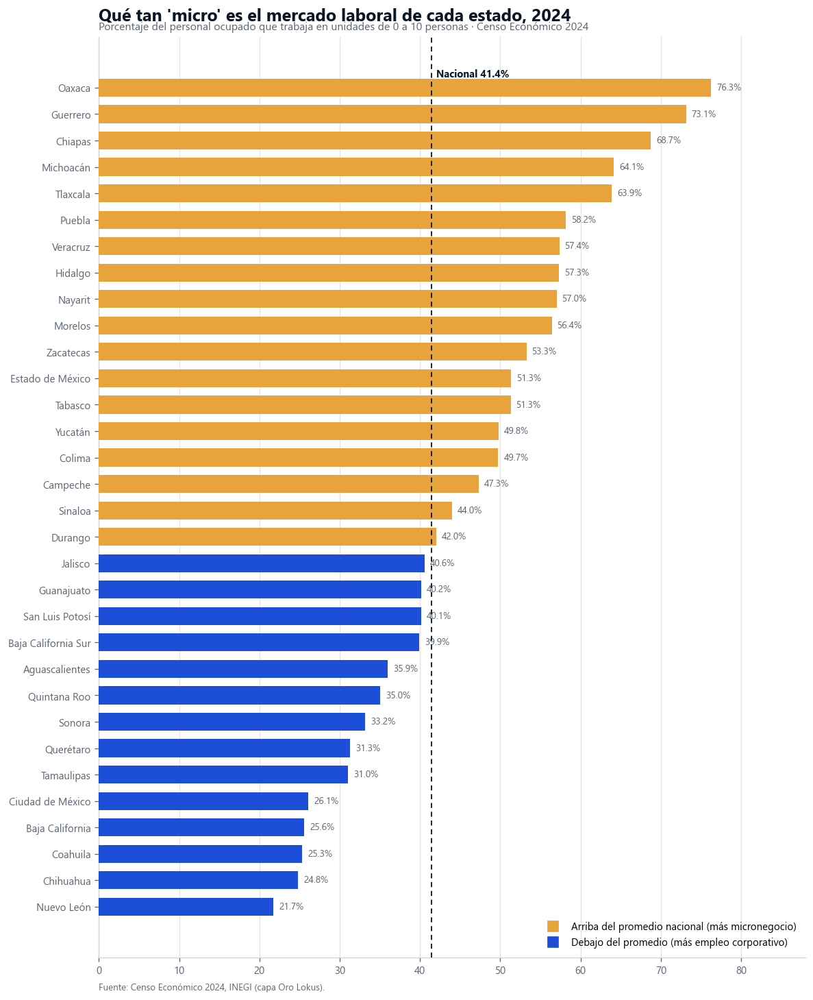

9,747 empresas generan más valor que los otros 5.46 millones juntos: la pirámide empresarial de México
El 0.18% de las empresas del país concentra el 54.3% del valor agregado; el 95.4% son micronegocios que emplean al 41% de la gente. Entre esos dos extremos se define casi toda decisión comercial en México: quién es tu cliente, dónde está tu talento y por qué canal se vende. El mapa completo, con veinte años de censos económicos.

El panorama: dos Méxicos en una misma pirámide
El Censo Económico 2024 cuenta 5,468,180 unidades económicas en el país. El 95.4% —5.21 millones— son micronegocios de 0 a 10 personas: la tiendita, el taller, el consultorio, la fonda. En la cúspide hay 9,747 unidades de 251 y más personas: plantas, cadenas, bancos, hospitales. Ese 0.18% del padrón genera $8.51 billones de pesos de valor agregado — el 54.3% del total nacional, más que los 5.46 millones de negocios restantes combinados.
La brecha por persona es el dato que ordena todo lo demás: un empleado de unidad grande produce $1,059,713 pesos de valor al año; uno de micro, $216,391 (4.9 veces menos). Y cobra distinto: $239,837 contra $90,771 anuales por persona remunerada (2.6 veces). Dos economías con productividades, sueldos y hábitos de compra distintos, conviviendo en el mismo mapa.
La lectura de negocio
Si vendes B2B enterprise, tu mercado total en México son ~9,700 cuentas grandes y 39 mil medianas — un universo direccionable completo, no una abstracción. Si vendes B2B a micronegocios, son 5.2 millones de puertas. Y si vendes B2C, la nómina que paga tu ticket viene 2.6 veces más holgada donde el empleo es corporativo. Los tres mapas son distintos y los tres salen del mismo censo.
El reacomodo 2019-2024: un millón de empleos cambió de nómina
Entre los censos 2019 y 2024 el empleo de las unidades grandes cayó de 8.71 a 8.03 millones (−688,580) — la primera caída de la serie. No fue recesión corporativa: fue el fin del outsourcing. Los servicios de apoyo a los negocios (SCIAN 56), donde operaban las grandes suministradoras de personal, pasaron de 1,742,208 a 358,285 empleos en unidades grandes tras la reforma de 2021 — y de 1,743 a 583 unidades. Los trabajadores no se esfumaron: migraron a la nómina directa de sus empresas usuarias. El propio censo lo confirma: el personal dependiente de la razón social pasó de 75.4% a 95.1% en las grandes.
Quitando ese efecto, el empleo corporativo creció 10% (+695 mil), encabezado por manufactura (+522,505), transportes y almacenamiento (+203,064) y comercio al por mayor (+143,159). Para quien vende servicios a corporativos, el mensaje es doble: el mercado de staffing masivo se extinguió por ley, y en su lugar las empresas internalizaron nómina, reclutamiento y gestión de personal — funciones que ahora compran como software y servicios especializados, no como headcount subcontratado.
El mapa: dónde el mercado es corporativo y dónde es changarro

Ordenado el universo completo de entidades, el mapa se parte en dos con una nitidez poco común: en Oaxaca el 76.3% del empleo vive en micronegocios; en Guerrero el 73.1%; en Chiapas el 68.7%. En el otro polo, Nuevo León (21.7%), Chihuahua (24.8%), Coahuila (25.3%) y Baja California (25.6%) son los mercados menos micro del país — ahí mandan las unidades grandes, que concentran entre 41% y 50% del empleo estatal.
| Entidad | % empleo en micro (0-10) | % empleo en grandes (251+) | Tipo de mercado laboral |
|---|---|---|---|
| Oaxaca | 76.3% | 4.0% | Micronegocio y canal tradicional |
| Guerrero | 73.1% | 4.0% | Micronegocio y canal tradicional |
| Chiapas | 68.7% | 5.4% | Micronegocio y canal tradicional |
| Michoacán | 64.1% | 9.6% | Micronegocio con nodos urbanos |
| — promedio nacional: 41.4% micro · 28.7% grandes — | |||
| Baja California | 25.6% | 41.2% | Corporativo-industrial |
| Coahuila | 25.3% | 47.0% | Corporativo-industrial |
| Chihuahua | 24.8% | 49.6% | Corporativo-industrial |
| Nuevo León | 21.7% | 42.7% | Corporativo diversificado |
Extremos del universo de 32 entidades por composición del empleo, 2024. Fuente: Censo Económico 2024, INEGI. La clasificación de tipo de mercado es analítica de Lokus.
Y la serie larga muestra que la brecha se fabricó en estas dos décadas: desde 2004, el empleo de unidades grandes creció +183% en Guanajuato, +174% en Querétaro y +146% en Aguascalientes, mientras caía 37% en Guerrero y 21% en Oaxaca, y Chiapas quedaba plano (+96 empleos en 20 años). El empleo corporativo no se repartió: se apiló sobre el corredor norte-Bajío — el mismo que domina nuestro ranking manufacturero de las 32 entidades.
El perfil del ingreso: dónde la nómina paga el ticket
La escalera salarial por tamaño es casi perfecta y no tiene excepciones: micro $90,771, pequeña $127,338, mediana $172,871, grande $239,837 de remuneración media anual por persona remunerada (2024, nominal). A eso se suma un dato estructural del extremo micro: de sus 11.6 millones de ocupados, 6.3 millones no perciben remuneración — dueños y familiares trabajando el negocio propio. Donde el empleo es micro, el ingreso es más bajo, más irregular y más en efectivo; donde es corporativo, hay quincena, prestaciones y bancarización. Es la misma frontera que trazamos en el mapa del mercado informal, confirmada desde otra fuente.
Insights para la acción
- B2B enterprise: tu mercado son 9,747 cuentas y ya sabes dónde viven. Chihuahua, Coahuila, Nuevo León, Baja California y Tamaulipas concentran el empleo de gran escala; ahí se venden los contratos grandes de software, logística, seguridad industrial y servicios corporativos. Un pipeline nacional enterprise que no priorice ese corredor está mal dimensionado.
- B2B micro: 5.2 millones de puertas que se atienden con otro modelo. El mercado de servir al changarro —punto de venta, crédito, inventario, distribución capilar— tiene su núcleo en el centro-sur: Oaxaca, Guerrero, Chiapas, Puebla y el Estado de México, donde la micro es mayoría absoluta del empleo. Ticket bajo, volumen enorme, cobranza en efectivo.
- Post-outsourcing, los servicios de personal se compran distinto. El estrato grande del SCIAN 56 se redujo de 1,743 a 583 unidades; la nómina se internalizó (95.1% de personal dependiente). La demanda que dejó el staffing masivo migró hacia software de RH y nómina, reclutamiento especializado y servicios REPSE de nicho — un mercado que se reconfiguró por decreto en un quinquenio.
- Para B2C de ticket alto, sigue a la nómina corporativa. La remuneración media 2.6 veces mayor del estrato grande marca dónde hay ingreso asalariado estable para financiamiento automotriz, vivienda media, seguros y consumo premium: la frontera norte industrial y el Bajío corporativo — no necesariamente los estados más poblados.
Conclusión
México no es un mercado: son dos, apilados en una pirámide extrema. Arriba, 9,747 unidades que generan más de la mitad del valor del país y cuyo empleo se concentró, censo tras censo, en el corredor norte-Bajío. Abajo, 5.2 millones de micronegocios que absorbieron casi todo el crecimiento del empleo del último quinquenio y que en el sur son, en la práctica, todo el mercado laboral. Cualquier decisión seria de expansión, canal o pricing empieza por saber en cuál de las dos pirámides está parado tu cliente — y el censo lo dice, estado por estado, antes de que gastes un peso en averiguarlo. ¿Cuántas de tus plazas objetivo son mercados de quincena y cuántas de efectivo? Esa pregunta tiene respuesta pública desde hace veinte años; la ventaja es leerla primero. Si quieres el panorama completo del padrón empresarial, empieza por cuántas empresas hay en México.
Preguntas frecuentes
¿Cuántas empresas grandes hay en México?
9,747 unidades de 251+ personas — el 0.18% de las 5,468,180 del país. Concentran 28.7% del empleo y 54.3% del valor agregado (Censo Económico 2024, INEGI).
¿Dónde está el empleo corporativo?
Chihuahua (49.6% del empleo en grandes), Coahuila (47.0%), Nuevo León (42.7%), Baja California (41.2%) y Tamaulipas (40.5%). En Oaxaca y Guerrero, solo 4% del empleo está en unidades grandes.
¿Qué pasó con el outsourcing?
Tras la reforma de 2021, el SCIAN 56 pasó de 1.74 millones a 358 mil empleos en unidades grandes; la nómina se internalizó (el personal dependiente de la razón social subió de 75.4% a 95.1% en las grandes).
¿Cuánto gana un empleado de empresa grande frente a uno de micro?
$239,837 contra $90,771 pesos anuales por persona remunerada: 2.6 veces más (2024, cifras nominales).
Análisis basado en los Censos Económicos 2004, 2009, 2014, 2019 y 2024 del INEGI, tabulados por estrato de personal ocupado (micro 0-10, pequeña 11-50, mediana 51-250, grande 251+), consultados en la capa de datos validada de Lokus. Universo completo: nacional y 32 entidades, todos los estratos; detalle sectorial nacional por sector SCIAN × estrato (SCIAN 56: Servicios de apoyo a los negocios y manejo de residuos, y servicios de remediación; SCIAN 31-33: Industrias manufactureras). Cada censo reporta la actividad del año previo; todas las cifras monetarias son nominales (pesos corrientes), por lo que los comparativos monetarios entre censos incluyen inflación. Remuneración media = remuneraciones totales ÷ personal remunerado. Los censos no cubren actividad agropecuaria (salvo pesca) ni ambulantaje sin establecimiento. Fecha de análisis: 15 de agosto de 2026. Para dimensionar el mercado, la competencia y el perfil de cualquier estado o municipio con datos oficiales integrados, visita lokusdata.com